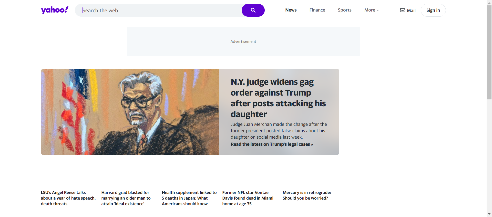
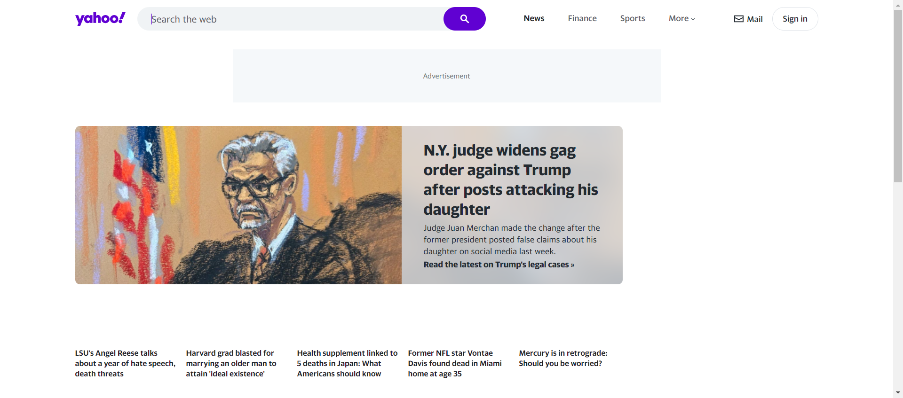
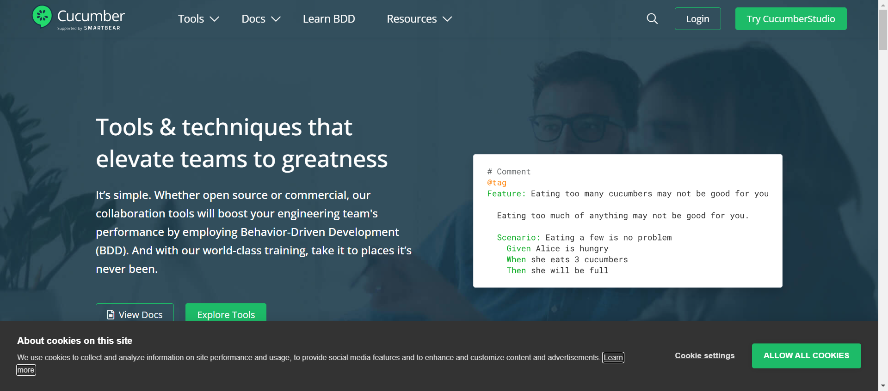
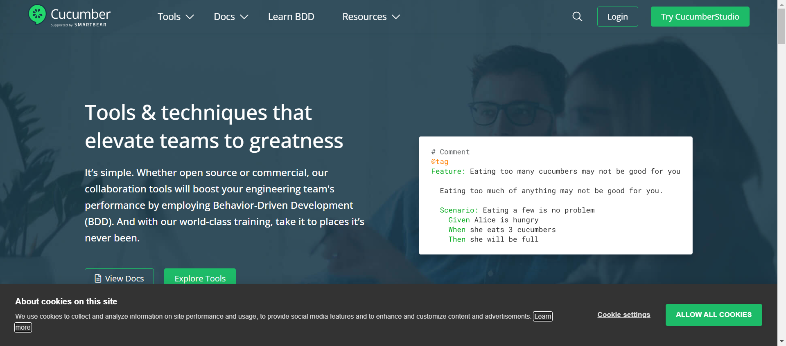
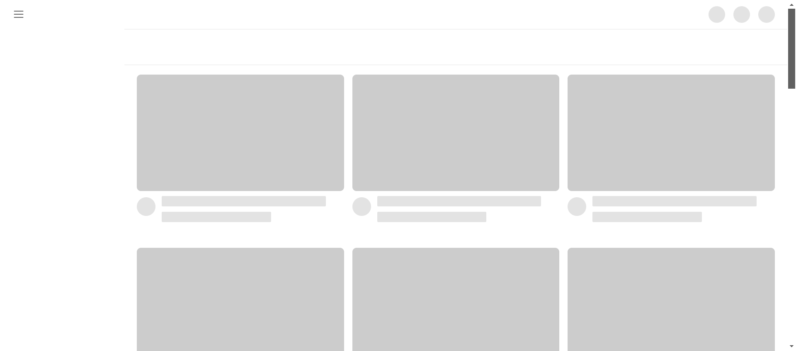
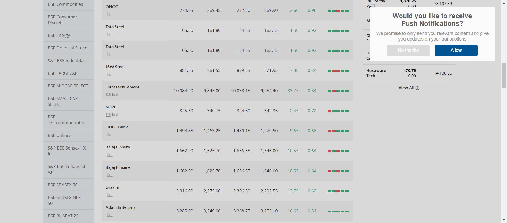
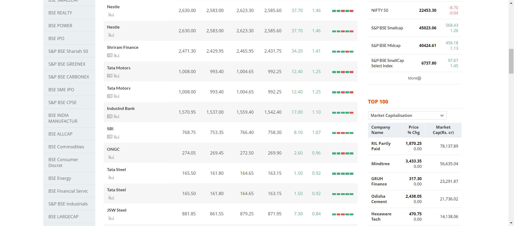
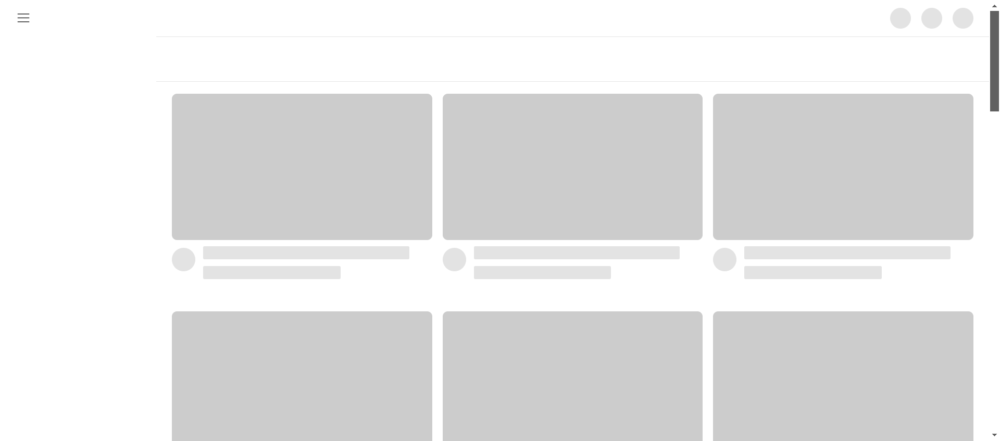
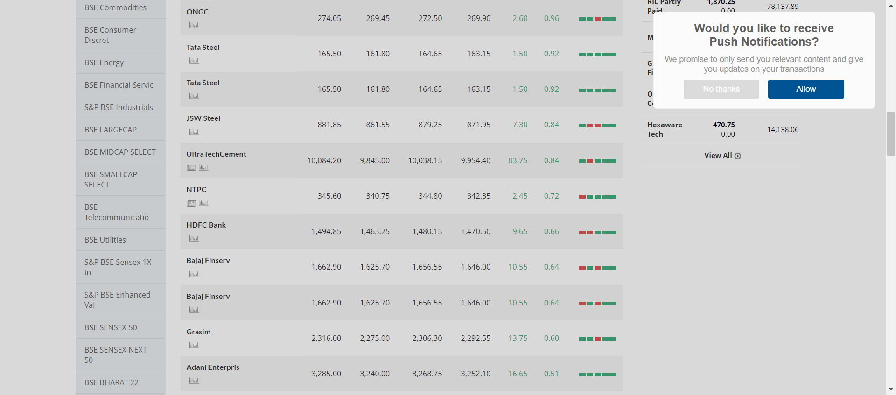
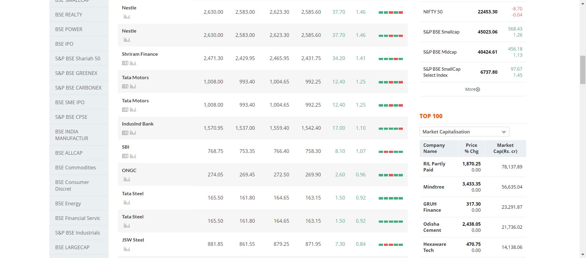

Started
Apr 2, 2024 05:02:59 pm
Ended
Apr 2, 2024 05:04:30 pm
Features Passed
0
Features Failed
1
Features
Scenarios
Steps
Timeline
Tags
| Name | Passed | Failed | Skipped | Others | Passed % |
|---|---|---|---|---|---|
| @tag3 | 1 | 0 | 0 | 0 | 100% |
| @UI | 3 | 8 | 0 | 0 | 27.273% |
| @tag1 | 3 | 8 | 0 | 0 | 27.273% |
| @tag2 | 2 | 8 | 0 | 0 | 20% |
-
Login feature
17:03:00 pm / 31:30:015 Fail
Login feature
04.02.2024 17:03:00 04.02.2024 17:04:30 31:30:015 · #test-id=1FailLogging in to the system scenrio twoGiven user is on app login page "https://www.way2automation.com/angularjs-protractor/banking/#/login"Then User logs into the systemStep skippedThen User logs out the systemStep skippedThen user navigates to "https://yahoo.com"Step skippedcom.app.Hooks.ApplicationHooks.After_UI(io.cucumber.java.Scenario) FailLogging in to the system scenrio twoGiven user is on app login page "https://www.way2automation.com/angularjs-protractor/banking/#/login"Then User logs into the systemStep skippedThen User logs out the systemStep skippedThen user navigates to "https://yahoo.com"Step skippedcom.app.Hooks.ApplicationHooks.After_UI(io.cucumber.java.Scenario)
FailLogging in to the system scenrio twoGiven user is on app login page "https://www.way2automation.com/angularjs-protractor/banking/#/login"Then User logs into the systemStep skippedThen User logs out the systemStep skippedThen user navigates to "https://yahoo.com"Step skippedcom.app.Hooks.ApplicationHooks.After_UI(io.cucumber.java.Scenario) FailLogging in to the system scenrio twoGiven user is on app login page "https://www.way2automation.com/angularjs-protractor/banking/#/login"Then User logs into the systemStep skippedThen User logs out the systemStep skippedThen user navigates to "https://yahoo.com"Step skippedcom.app.Hooks.ApplicationHooks.After_UI(io.cucumber.java.Scenario)
FailLogging in to the system scenrio twoGiven user is on app login page "https://www.way2automation.com/angularjs-protractor/banking/#/login"Then User logs into the systemStep skippedThen User logs out the systemStep skippedThen user navigates to "https://yahoo.com"Step skippedcom.app.Hooks.ApplicationHooks.After_UI(io.cucumber.java.Scenario) PassLogging in to the system scenrio twoGiven user is on app login page "https://www.way2automation.com/angularjs-protractor/banking/#/login"Then User logs into the systemStep in report using ExtentCucumberAdapter.addTestStepLogThen User logs out the systemThen user navigates to "https://yahoo.com"FailLogging in to the system scenrio twoGiven user is on app login page "https://www.way2automation.com/angularjs-protractor/banking/#/login"Then User logs into the systemStep skippedThen User logs out the systemStep skippedThen user navigates to "https://yahoo.com"Step skippedcom.app.Hooks.ApplicationHooks.After_UI(io.cucumber.java.Scenario)
PassLogging in to the system scenrio twoGiven user is on app login page "https://www.way2automation.com/angularjs-protractor/banking/#/login"Then User logs into the systemStep in report using ExtentCucumberAdapter.addTestStepLogThen User logs out the systemThen user navigates to "https://yahoo.com"FailLogging in to the system scenrio twoGiven user is on app login page "https://www.way2automation.com/angularjs-protractor/banking/#/login"Then User logs into the systemStep skippedThen User logs out the systemStep skippedThen user navigates to "https://yahoo.com"Step skippedcom.app.Hooks.ApplicationHooks.After_UI(io.cucumber.java.Scenario) FailLogging in to the system scenrio twoGiven user is on app login page "https://www.way2automation.com/angularjs-protractor/banking/#/login"Then User logs into the systemStep skippedThen User logs out the systemStep skippedThen user navigates to "https://yahoo.com"Step skippedcom.app.Hooks.ApplicationHooks.After_UI(io.cucumber.java.Scenario)
FailLogging in to the system scenrio twoGiven user is on app login page "https://www.way2automation.com/angularjs-protractor/banking/#/login"Then User logs into the systemStep skippedThen User logs out the systemStep skippedThen user navigates to "https://yahoo.com"Step skippedcom.app.Hooks.ApplicationHooks.After_UI(io.cucumber.java.Scenario) FailLogging in to the system scenrio twoGiven user is on app login page "https://www.way2automation.com/angularjs-protractor/banking/#/login"Then User logs into the systemStep skippedThen User logs out the systemStep skippedThen user navigates to "https://yahoo.com"Step skippedcom.app.Hooks.ApplicationHooks.After_UI(io.cucumber.java.Scenario)
FailLogging in to the system scenrio twoGiven user is on app login page "https://www.way2automation.com/angularjs-protractor/banking/#/login"Then User logs into the systemStep skippedThen User logs out the systemStep skippedThen user navigates to "https://yahoo.com"Step skippedcom.app.Hooks.ApplicationHooks.After_UI(io.cucumber.java.Scenario) FailLogging in to the system scenrio twoGiven user is on app login page "https://www.way2automation.com/angularjs-protractor/banking/#/login"Then User logs into the systemStep skippedThen User logs out the systemStep skippedThen user navigates to "https://yahoo.com"Step skippedcom.app.Hooks.ApplicationHooks.After_UI(io.cucumber.java.Scenario)
FailLogging in to the system scenrio twoGiven user is on app login page "https://www.way2automation.com/angularjs-protractor/banking/#/login"Then User logs into the systemStep skippedThen User logs out the systemStep skippedThen user navigates to "https://yahoo.com"Step skippedcom.app.Hooks.ApplicationHooks.After_UI(io.cucumber.java.Scenario) PassLogging in to the system scenrio oneGiven user is on app login page "https://www.way2automation.com/angularjs-protractor/banking/#/login"Then User logs into the systemStep in report using ExtentCucumberAdapter.addTestStepLogThen User logs out the systemThen user navigates to "https://cucumber.io/"FailLogging in to the system scenrio twoGiven user is on app login page "https://www.way2automation.com/angularjs-protractor/banking/#/login"Then User logs into the systemStep skippedThen User logs out the systemStep skippedThen user navigates to "https://yahoo.com"Step skippedcom.app.Hooks.ApplicationHooks.After_UI(io.cucumber.java.Scenario)
PassLogging in to the system scenrio oneGiven user is on app login page "https://www.way2automation.com/angularjs-protractor/banking/#/login"Then User logs into the systemStep in report using ExtentCucumberAdapter.addTestStepLogThen User logs out the systemThen user navigates to "https://cucumber.io/"FailLogging in to the system scenrio twoGiven user is on app login page "https://www.way2automation.com/angularjs-protractor/banking/#/login"Then User logs into the systemStep skippedThen User logs out the systemStep skippedThen user navigates to "https://yahoo.com"Step skippedcom.app.Hooks.ApplicationHooks.After_UI(io.cucumber.java.Scenario) PassLogging in to the system scenrio threeGiven user is on app login page "https://www.way2automation.com/angularjs-protractor/banking/#/login"Then user navigates to "https://youtube.com"Then fetch "% Gain" for company "ONGC"Value of % Gain for company ONGC is 0.96Then fetch "High" for company "Nestle"Value of High for company Nestle is 2,630.00Then fetch "Low" for company "Nestle"Value of Low for company Nestle is 2,583.00
PassLogging in to the system scenrio threeGiven user is on app login page "https://www.way2automation.com/angularjs-protractor/banking/#/login"Then user navigates to "https://youtube.com"Then fetch "% Gain" for company "ONGC"Value of % Gain for company ONGC is 0.96Then fetch "High" for company "Nestle"Value of High for company Nestle is 2,630.00Then fetch "Low" for company "Nestle"Value of Low for company Nestle is 2,583.00
-
@tag3
1 tests
@tag3
1 passedStatus Timestamp TestName Pass 17:03:22 pm Logging in to the system scenrio three Login feature.Logging in to the system scenrio three -
@UI
11 tests
@UI
3 passed 8 failedStatus Timestamp TestName Fail 17:03:00 pm Logging in to the system scenrio two Login feature.Logging in to the system scenrio twoFail 17:03:00 pm Logging in to the system scenrio two Login feature.Logging in to the system scenrio twoFail 17:03:00 pm Logging in to the system scenrio two Login feature.Logging in to the system scenrio twoPass 17:03:00 pm Logging in to the system scenrio two Login feature.Logging in to the system scenrio twoFail 17:03:00 pm Logging in to the system scenrio two Login feature.Logging in to the system scenrio twoFail 17:03:00 pm Logging in to the system scenrio two Login feature.Logging in to the system scenrio twoFail 17:03:00 pm Logging in to the system scenrio two Login feature.Logging in to the system scenrio twoFail 17:03:00 pm Logging in to the system scenrio two Login feature.Logging in to the system scenrio twoPass 17:03:00 pm Logging in to the system scenrio one Login feature.Logging in to the system scenrio oneFail 17:03:00 pm Logging in to the system scenrio two Login feature.Logging in to the system scenrio twoPass 17:03:22 pm Logging in to the system scenrio three Login feature.Logging in to the system scenrio three -
@tag1
11 tests
@tag1
3 passed 8 failedStatus Timestamp TestName Fail 17:03:00 pm Logging in to the system scenrio two Login feature.Logging in to the system scenrio twoFail 17:03:00 pm Logging in to the system scenrio two Login feature.Logging in to the system scenrio twoFail 17:03:00 pm Logging in to the system scenrio two Login feature.Logging in to the system scenrio twoPass 17:03:00 pm Logging in to the system scenrio two Login feature.Logging in to the system scenrio twoFail 17:03:00 pm Logging in to the system scenrio two Login feature.Logging in to the system scenrio twoFail 17:03:00 pm Logging in to the system scenrio two Login feature.Logging in to the system scenrio twoFail 17:03:00 pm Logging in to the system scenrio two Login feature.Logging in to the system scenrio twoFail 17:03:00 pm Logging in to the system scenrio two Login feature.Logging in to the system scenrio twoPass 17:03:00 pm Logging in to the system scenrio one Login feature.Logging in to the system scenrio oneFail 17:03:00 pm Logging in to the system scenrio two Login feature.Logging in to the system scenrio twoPass 17:03:22 pm Logging in to the system scenrio three Login feature.Logging in to the system scenrio three -
@tag2
10 tests
@tag2
2 passed 8 failedStatus Timestamp TestName Fail 17:03:00 pm Logging in to the system scenrio two Login feature.Logging in to the system scenrio twoFail 17:03:00 pm Logging in to the system scenrio two Login feature.Logging in to the system scenrio twoFail 17:03:00 pm Logging in to the system scenrio two Login feature.Logging in to the system scenrio twoPass 17:03:00 pm Logging in to the system scenrio two Login feature.Logging in to the system scenrio twoFail 17:03:00 pm Logging in to the system scenrio two Login feature.Logging in to the system scenrio twoFail 17:03:00 pm Logging in to the system scenrio two Login feature.Logging in to the system scenrio twoFail 17:03:00 pm Logging in to the system scenrio two Login feature.Logging in to the system scenrio twoFail 17:03:00 pm Logging in to the system scenrio two Login feature.Logging in to the system scenrio twoFail 17:03:00 pm Logging in to the system scenrio two Login feature.Logging in to the system scenrio twoPass 17:03:22 pm Logging in to the system scenrio three Login feature.Logging in to the system scenrio three
-
org.openqa.selenium.NoSuchElementException
1 tests
org.openqa.selenium.NoSuchElementException
1 failedStatus Timestamp TestName Fail 17:03:09 pm Given user is on app login page "https://www.way2automation.com/angularjs-protractor/banking/#/login" Login feature.Logging in to the system scenrio two.Given user is on app login page "https://www.way2automation.com/angularjs-protractor/banking/#/login"Fail 17:03:10 pm Given user is on app login page "https://www.way2automation.com/angularjs-protractor/banking/#/login" Login feature.Logging in to the system scenrio two.Given user is on app login page "https://www.way2automation.com/angularjs-protractor/banking/#/login"Fail 17:03:09 pm Given user is on app login page "https://www.way2automation.com/angularjs-protractor/banking/#/login" Login feature.Logging in to the system scenrio two.Given user is on app login page "https://www.way2automation.com/angularjs-protractor/banking/#/login"Fail 17:03:10 pm Given user is on app login page "https://www.way2automation.com/angularjs-protractor/banking/#/login" Login feature.Logging in to the system scenrio two.Given user is on app login page "https://www.way2automation.com/angularjs-protractor/banking/#/login"Fail 17:03:13 pm Given user is on app login page "https://www.way2automation.com/angularjs-protractor/banking/#/login" Login feature.Logging in to the system scenrio two.Given user is on app login page "https://www.way2automation.com/angularjs-protractor/banking/#/login"Fail 17:03:13 pm Given user is on app login page "https://www.way2automation.com/angularjs-protractor/banking/#/login" Login feature.Logging in to the system scenrio two.Given user is on app login page "https://www.way2automation.com/angularjs-protractor/banking/#/login"Fail 17:03:10 pm Given user is on app login page "https://www.way2automation.com/angularjs-protractor/banking/#/login" Login feature.Logging in to the system scenrio two.Given user is on app login page "https://www.way2automation.com/angularjs-protractor/banking/#/login"Fail 17:03:14 pm Given user is on app login page "https://www.way2automation.com/angularjs-protractor/banking/#/login" Login feature.Logging in to the system scenrio two.Given user is on app login page "https://www.way2automation.com/angularjs-protractor/banking/#/login"